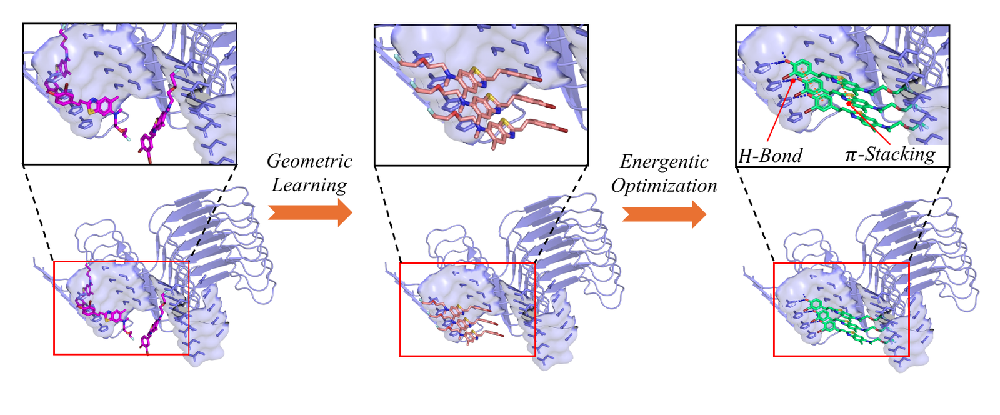
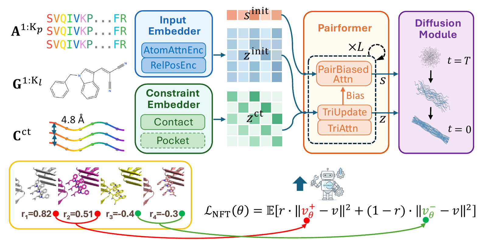

Overview of CORAL. A two-stage training recipe progressively shapes the model's ligand-pose distribution on amyloid fibrils. The geometric learning stage (left to middle) supervises the model on curated stacking poses, teaching it to align ligands along the cross-β groove into periodic stacking arrangements. The energetic optimisation stage (middle to right) further refines the pose distribution via online reinforcement learning under a composite reward that combines protein–ligand binding affinity with cooperative inter-ligand stacking energy, leading to tighter contacts such as the H-bond and π–π stacking interactions highlighted in the right inset.
A hallmark of neurodegenerative diseases such as Alzheimer's and Parkinson's is the aberrant aggregation of proteins into amyloid fibrils, and small molecules that selectively bind to these fibrils hold promise as diagnostics, imaging probes, and therapeutics. Predicting how such ligands bind to fibril targets, however, presents two fundamental challenges. First, resolved co-crystal structures of amyloid–ligand complexes are exceptionally scarce; even with recent advances in cryo-EM only a handful have been structurally characterized, making supervised training of docking models impractical for this target class. Second, amyloid fibrils present a binding mode fundamentally different from globular proteins: ligands intercalate into longitudinal cross-β grooves and stack cooperatively along the fibril axis, a geometry that existing docking models are not designed to capture.
To address these challenges, we present CORAL (COopeRative Amyloid Ligand docking), a reinforcement learning framework that trains a generative docking model to produce ligand pose distributions tailored to the cross-β groove geometry. Our reward explicitly incorporates cooperative ligand–ligand stacking energy alongside protein–ligand docking affinity, directly capturing the distinctive binding geometry of amyloid fibrils. We further introduce a curated evaluation set of amyloid–ligand complexes constructed from model-generated poses validated by domain experts. Experiments on both experimentally resolved structures and this evaluation set demonstrate improved pose quality and binding affinity correlation over existing docking baselines.

Architecture. A Pairformer–Diffusion structure model with fibril-periodicity priors generates 3D fibril–ligand complexes from protein sequences and ligand graphs. Generated poses are scored by a reward that combines protein–ligand binding affinity with cooperative inter-ligand stacking energy, and the model is refined via online reinforcement learning.
@article{sun2026coral,
title = {CORAL: Learning Amyloid Fibril Ligand Docking with Cooperative Binding Rewards},
author = {Sun, Yasheng and Li, Bohan and Tao, Youqi and Schmidhuber, J\"urgen},
journal = {arXiv preprint arXiv:2607.17412},
year = {2026},
url = {https://arxiv.org/abs/2607.17412}
}